地政学
チェンマイはタイ北部の山地盆地にあり、ミャンマー、ラオス、中国雲南へ続く広域移動の結節点です。首都バンコクから距離がある一方、北部文化、国境交易、山地社会、観光回廊を束ねる地域中心として機能します。

🇹🇭 タイ / アジア / World City Atlas
城壁と堀に囲まれた旧市街、ドイステープの山、ラーンナー仏教の寺院、夜市、山地文化、コーヒー、長期滞在者、煙害の季節が重なります。静かな古都の印象の奥に、観光都市としての労働と環境リスクがあります。
都市の骨格
チェンマイは、旧市街の堀と城壁跡、ドイステープの斜面、ピン川沿いの市街、郊外の大学や工房が重なる都市です。寺院の静けさと観光の賑わい、山地の文化と現代の長期滞在が同じ生活圏に入っています。
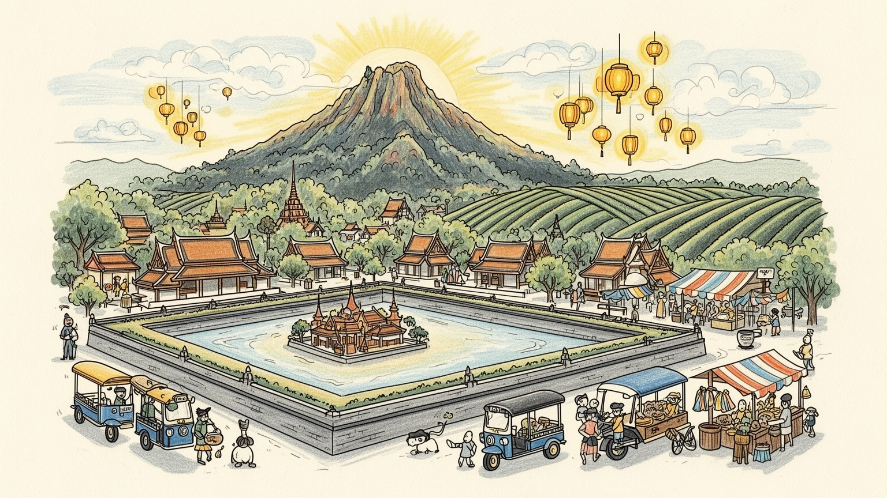
チェンマイはタイ北部の山地盆地にあり、ミャンマー、ラオス、中国雲南へ続く広域移動の結節点です。首都バンコクから距離がある一方、北部文化、国境交易、山地社会、観光回廊を束ねる地域中心として機能します。
観光、宿泊、飲食、寺院周辺の小売、語学学校、大学、医療、工芸、コーヒー、農産物加工が雇用を支えます。繁忙期と煙害期で客足が変わり、ガイド、屋台、運転手、宿の仕事は季節の波を受けます。収入も揺れます。
ラーンナー王国の記憶、仏教寺院、托鉢、灯籠祭り、精霊信仰、山地民族の織物と市場が都市の時間を作ります。寺院は観光名所である前に、葬儀、供養、学び、地域の相談を支える生活の場です。今も身近です。街中に。
旧市街、ドイステープ、夜市、カフェ、象保護施設、山村ツアーは訪問の入口です。一方で住民には家賃、交通、観光価格、煙害、若者の雇用、旧市街の商業化が日常の課題として残ります。季節差が大きい街です。今も続きます。
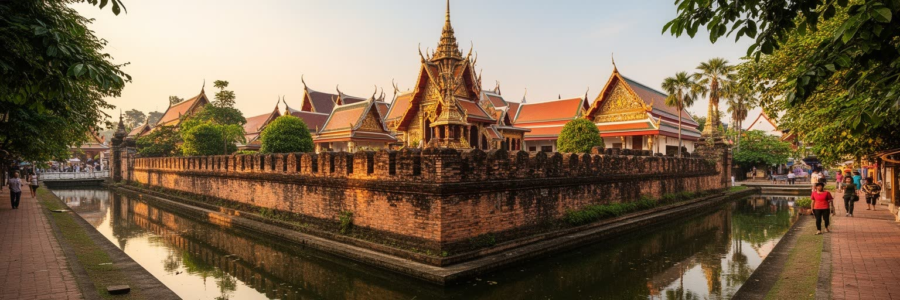
チェンマイ旧市街の分かりやすい特徴は、ほぼ四角い堀と城壁跡です。この輪郭は観光地図の目印であるだけでなく、ラーンナー王国の都として築かれた都市の記憶を今も日常に残しています。門の周辺には寺院、宿、飲食店、旅行会社、マッサージ店、屋台が集まり、細い路地には住居、学校、僧院、洗濯物、バイクの移動が混ざります。旧市街は静かな古都に見えますが、実際には観光客、学生、僧侶、地元商人、長期滞在者が同じ道を使う高密度の生活空間です。保存される城壁は都市の象徴である一方、古い住宅の改装、宿泊施設への転用、夜の騒音、交通規制、歩道の狭さなど、暮らしと観光の調整も必要になります。寺院の多さは歴史の厚みを示しますが、各寺院は写真を撮る背景ではなく、地域の儀礼、教育、相談、寄進を受け止める場です。チェンマイ旧市街を読むには、堀の美しい輪郭と、その内側で誰が住み続け、誰が商売をし、誰が訪問者のために働いているのかを重ねて見る必要があります。保存と活用は対立ではなく、毎日の家賃、交通、礼拝、観光収入の中で調整される現実です。堀の外側へ市街が広がった今も、旧市街は都市の基準点であり、道案内、祭礼、宿泊、記憶の中心であり続けます。古い輪郭は、変化する街を測る物差しでもあります。住む人の視点を加えると、古都はより現実的に見えます。
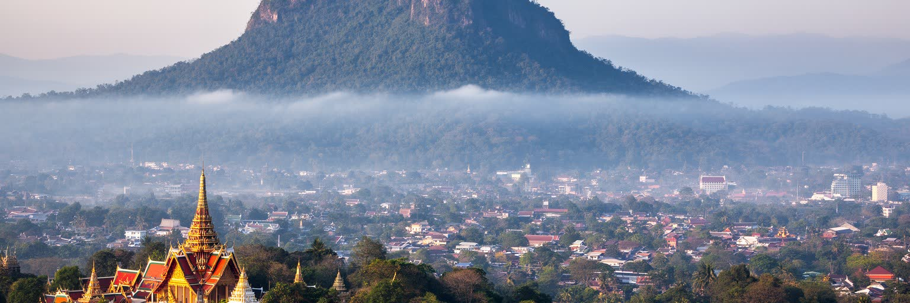
チェンマイの西にそびえるドイステープは、単なる背景の山ではありません。山頂近くのワット・プラタート・ドイステープは北タイを代表する聖地で、参拝、観光、巡礼、都市の眺望が重なります。旧市街から山へ向かう道は、日帰り旅行のルートであると同時に、僧院、大学、森林、村、土産物店、運転手の仕事を結ぶ生活線です。山は涼しさや水源、森林景観を都市に与えますが、開発、交通量、廃棄物、斜面の保全、山火事、煙害とも関わります。晴れた日には市街を見下ろす展望が都市の位置を実感させ、煙害の季節には同じ展望が霞み、盆地地形が大気汚染をため込みやすいことを示します。山の聖性は観光商品になりやすい一方、参拝者には服装、礼拝作法、寄進、静けさへの配慮が求められます。チェンマイを読むには、旧市街の堀だけでなく、山がつくる上下の関係を見る必要があります。寺院へ登る道、山麓の大学地区、森に近い住宅、コーヒー畑や村の生活は、都市の外側ではなくチェンマイの一部です。ドイステープは景観、信仰、気候、観光を一つに結ぶ要の地形です。週末には地元の参拝者と旅行者が同じ坂道を上り、渋滞や駐車も起こります。山へ向かう移動そのものが、都市の信仰と観光の重なりを示します。斜面の管理は、都市の安全と水の問題にも関わります。山は日々の目印です。
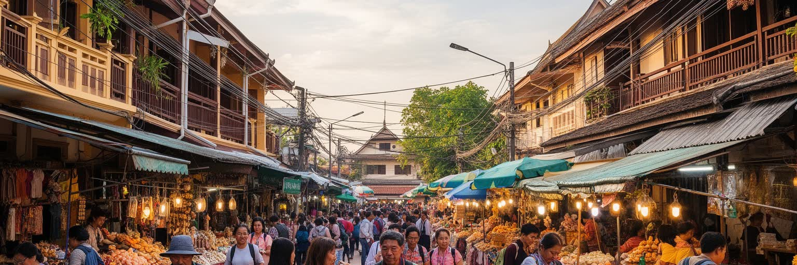
チェンマイの観光は、寺院や山を訪ねるだけでなく、宿泊、飲食、移動、体験教室、工芸、マッサージ、語学、料理教室、カフェ、山村ツアーを組み合わせる滞在型の産業です。旧市街の小さな宿、郊外のリゾート、夜市の屋台、配車アプリの運転手、ガイド、寺院周辺の売店、ランドリー、清掃、予約管理が、旅行者には見えにくい形で都市を動かします。観光は地元に多様な仕事を作る一方、収入は季節や国際情勢、航空便、為替、オンライン評価に左右されます。乾季の繁忙期は忙しく、煙害が強い時期や雨季には客足が落ち、家族経営の店ほど在庫や家賃の負担を受けやすくなります。長期滞在者やデジタルノマドは安定した需要をもたらしますが、人気地区では家賃や物価を押し上げ、地元の若者が住みにくくなることもあります。チェンマイの産業を見るときは、寺院の美しさだけでなく、笑顔で接客し、朝早く市場へ行き、英語で説明し、レビューに対応し、煙害の時期にも働く人々の時間を考える必要があります。観光都市の持続性は、訪問者の満足だけでなく、働く人が暮らしを維持できるかで測られます。予約サイトの評価が店の売上を左右し、口コミ対応も労働の一部になります。観光が増えるほど、見えない事務作業と気遣いも増えていきます。繁忙期の笑顔の裏には、休みの少ない家族経営や移動労働者の調整があります。
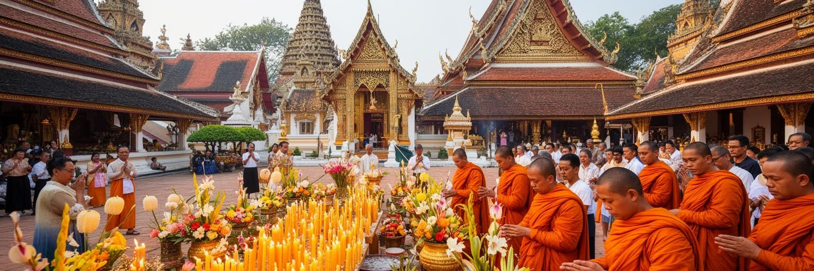
チェンマイでは寺院が都市の時間を作ります。朝の托鉢、仏教祝日、葬儀、供養、出家、瞑想、寺院学校、地域の寄進が、観光地としての華やかな伽藍の背後で続いています。旧市街だけでも多くの寺院があり、金色の仏塔、木彫、壁画、僧房、境内の大木がラーンナー文化の記憶を伝えます。しかし寺院は展示施設ではありません。住民は家族の節目に寺へ行き、僧侶は教育や相談を担い、近所の人は祭礼の準備や清掃を手伝います。外国人旅行者にとって寺院は静かな見学場所ですが、地域にとっては社会の結節点です。写真を撮る行為、服装、音量、境内での振る舞いは、観光と信仰が同じ空間を共有する難しさを示します。瞑想や僧侶との対話を売りにするプログラムも増えていますが、宗教体験が消費されるだけにならないかという問いも残ります。チェンマイの仏教を読むには、建築の美しさだけでなく、儀礼が日常の不安や死、学び、地域の互助をどのように受け止めているかを見る必要があります。寺院は都市の古さを証明する飾りではなく、今も人々の時間を整える制度です。境内で開かれる小さな市場や寄進の列も、寺院が地域経済と結びつく場面です。観光客が静かに見学するだけでは、この日常の機能は見えにくくなります。僧侶の学びと地域の世話は、都市の福祉にも近い役割を持ちます。身近な制度です。
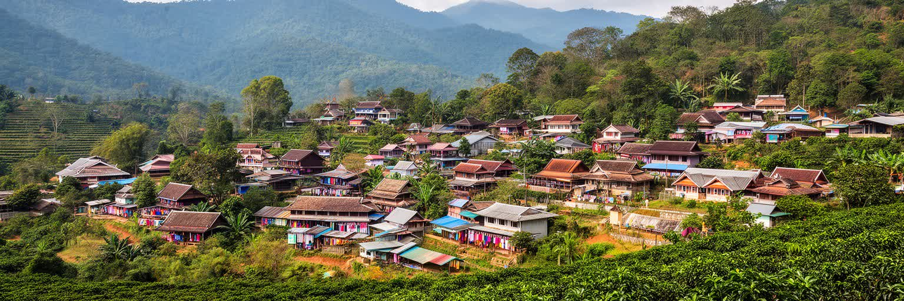
チェンマイ県の広い山地には、カレン、モン、アカ、ラフ、リスなど多様な山地コミュニティが暮らし、織物、銀細工、農業、コーヒー、茶、野菜、祭礼、言語の違いが地域の厚みを作っています。観光では民族衣装や村訪問が強調されますが、山地文化は写真のためにあるわけではありません。土地利用、国籍や身分証、教育、出稼ぎ、農産物の価格、森林保全、観光収入、若者の進学が生活の現実です。村を訪ねるツアーは収入になる一方、外から見て分かりやすい文化だけが商品化される危険もあります。コーヒーや工芸が都市のカフェや市場で売られると、山地と市街の経済は強く結びつきますが、利益が生産者へ十分戻るかは別の問題です。チェンマイの山地を読むには、旧市街から日帰りできる異文化体験としてではなく、都市の食、工芸、労働、環境政策とつながる生活圏として見る必要があります。山の村から大学へ通う若者、都市で働く親族、祭りに戻る家族、作物を運ぶ車が、チェンマイを広域都市にしています。山地文化は周縁ではなく、北タイの都市性を支える基盤です。市場の布や銀細工を買うとき、その背景には言語、土地、教育、移動の問題があります。都市は山地を消費するだけでなく、公正な取引を支える責任も持ちます。観光客の関心が長く続けば、文化の継承と若者の仕事を結ぶ可能性もあります。
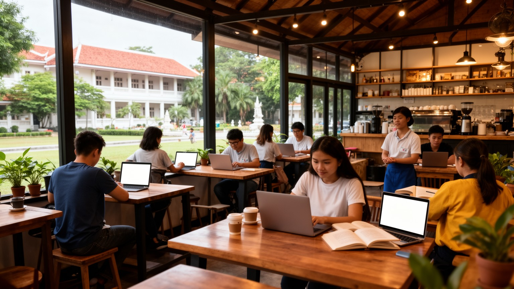
チェンマイは短期旅行だけでなく、長期滞在、語学学習、退職後の移住、遠隔労働の拠点としても知られています。比較的穏やかな都市規模、カフェ、コワーキング、大学、医療、国際学校、住宅の選択肢が、国内外の滞在者を引きつけます。こうした人々は飲食、宿泊、賃貸、教育、医療、交通に安定した需要を作り、英語対応のサービスや新しい店を増やします。一方で、人気地区では家賃や地価が上がり、地元の学生や労働者にとって住みにくくなることがあります。長期滞在者の消費は都市に収入をもたらしますが、地域社会への参加が薄いまま快適さだけを利用するなら、生活圏の分断も生まれます。大学は北タイの人材を集め、医療や技術、観光、農業、文化研究の基盤になります。若者にとってチェンマイは学ぶ場所であると同時に、卒業後に残るか、バンコクや海外へ出るかを考える場所です。長期滞在の都市として読むには、外国人向けの便利さだけでなく、地元の教育、雇用、住宅、医療への影響を同時に見る必要があります。チェンマイの柔らかな魅力は、多様な滞在者を受け入れる力と、生活費上昇への不安を併せ持っています。カフェで働く人、部屋を貸す家主、通学する学生、医療通訳は、この国際化を日々の仕事として支えています。快適な滞在の裏には、地域側の調整が続きます。制度の変化にも影響されます。
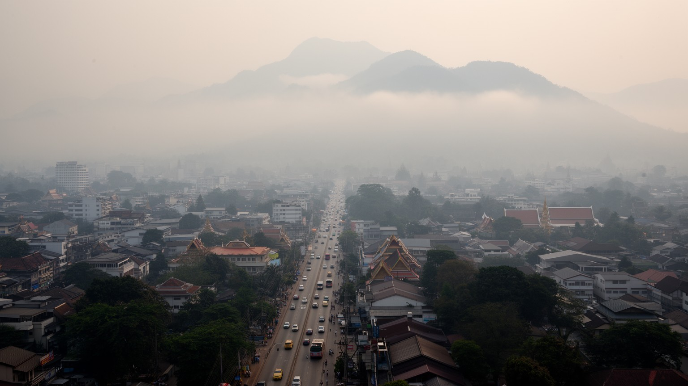
チェンマイを語るうえで避けられないのが、乾季後半の煙害です。農地や森林の火入れ、山火事、交通、都市活動が重なり、山地盆地の地形は煙や微粒子をため込みやすくします。普段は都市の魅力であるドイステープの山並みが霞み、屋外観光、学校、屋台、配車、ホテル、健康管理に影響が出ます。旅行者は日程を変えれば済むこともありますが、住民や屋外労働者は毎日その空気の中で働き、子どもや高齢者、呼吸器に不安のある人ほど負担が大きくなります。煙害は単に環境問題ではなく、農業、貧困、土地管理、国境を越える大気、観光収入、行政能力が絡む社会問題です。火入れを禁じるだけでは、農家の生計や代替手段が見えなくなります。一方で、健康被害を放置すれば観光都市としての信頼も住民の生活も損なわれます。チェンマイの煙害を読むには、澄んだ山のイメージと、季節によって外出や営業を調整せざるを得ない現実を同時に見ることが必要です。空気の質は見えにくい都市インフラであり、水道や道路と同じように、暮らしと経済を支える条件です。学校の休校判断、空気清浄機の購入、屋外イベントの中止も家計や仕事に影響します。煙を減らすには、山地の農業と都市の健康を一つの政策として扱う必要があります。観光の予定表にも、住民の通院にも、同じ空気の質が関わっています。
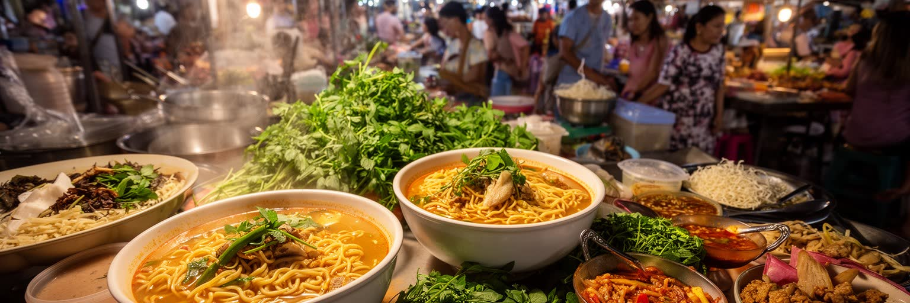
チェンマイの食は、北タイの生活を理解する入口です。カオソーイ、サイウア、ナムプリック、もち米、ハーブ、山の野菜、発酵食品、コーヒーが、市場、屋台、食堂、カフェ、家庭をつないでいます。観光客は名物料理を求めて店を探しますが、住民にとって市場は毎日の食材、会話、季節の変化、価格を知る場所です。旧市街や夜市では旅行者向けの店が目立ちますが、早朝の市場には寺へ向かう人、学校前に朝食を買う家族、屋台の仕込みをする人が集まります。食は山地農業とも結びつき、野菜、果物、茶、コーヒー、香草、肉、発酵調味料が都市へ運ばれます。料理教室やカフェ文化は観光産業として成功していますが、食材の供給、農家の所得、廃棄物、価格上昇も見なければなりません。チェンマイの食市場を読むには、写真映えする一皿だけでなく、朝の仕入れ、炭火の匂い、寺院への供物、学生の安い昼食、観光客向け価格と地元価格の差を見ることが大切です。食は都市の柔らかな魅力であると同時に、農村、山地、労働、観光を結ぶ実務的なネットワークです。小さな食堂の値段が上がれば、学生や屋台で働く人の生活にすぐ響きます。名物料理の人気は、地域の食材供給を守る力にも負担にもなります。市場での朝の会話は、観光パンフレットには出にくい都市の体温です。香りも記憶です。深く。
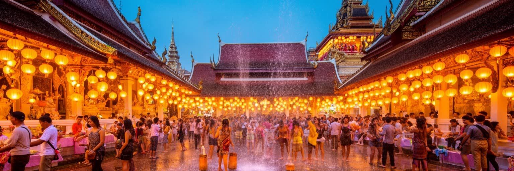
チェンマイの夜は、寺院の静けさと市場の賑わい、祭礼の光が重なります。ロイクラトンやイーペンの時期には灯籠や水辺の祈りが都市を象徴する風景になり、多くの旅行者がその光景を求めて訪れます。ソンクラーンの水かけ、寺院の祭礼、ナイトバザール、週末市も、チェンマイを体験する重要な入口です。ただし、祭礼は観光ショーだけではありません。家族で寺へ行き、祖先を思い、地域で準備をし、寄進や清掃を担う住民の時間があります。観光客が増えるほど、混雑、騒音、ごみ、安全管理、価格上昇、宗教的な場での振る舞いが課題になります。灯籠の美しさも、火災や航空安全、廃棄物、川の環境と無関係ではありません。夜市は小規模な商人や工芸作家に収入をもたらしますが、観光客の好みに合わせた商品が増えると、地域の手仕事の意味が薄れる場合もあります。チェンマイの祭礼を読むには、光の幻想性と、その準備、規制、清掃、祈り、労働を合わせて見る必要があります。夜の魅力は都市の重要な経済資源であると同時に、住民の信仰と生活リズムを守る繊細な場でもあります。写真に残る一瞬の背後には、許可、警備、片付け、家族の祈りがあります。夜の都市は、観光と信仰の距離を最もはっきり映します。明かりの美しさを支える人の手間も、祭礼の一部です。夜明けの片付けまで含めて祭りです。
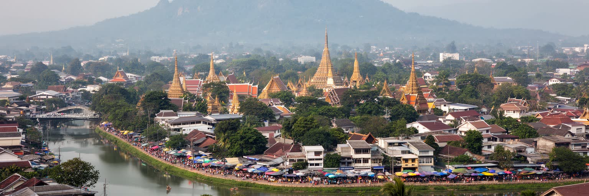
チェンマイは、静かな北タイの古都として語られやすい都市です。旧市街の堀、寺院、ドイステープの山、夜市、カフェ、灯籠祭りは確かに魅力的で、短い旅でも強い印象を残します。しかし、その印象だけではチェンマイの全体像は見えません。観光に依存する仕事、山地コミュニティとの関係、大学と医療、長期滞在者による住宅市場の変化、煙害の健康リスク、農地と森林の管理、若者の進路が同じ都市空間にあります。古都の保存は観光収入を生みますが、旧市街で住み続ける人には家賃や交通、騒音の問題もあります。ドイステープの山は信仰と眺望を与える一方、煙害の季節には都市の弱点を可視化します。カフェやコワーキングは国際的な開放感を作りますが、地元の労働条件や生活費を見なければ片側だけの物語になります。チェンマイを読む鍵は、穏やかさを否定することではなく、その穏やかさを支える労働、宗教、山地、環境、教育を同時に見ることです。寺院で祈る人、屋台で働く人、山村から作物を運ぶ人、煙の季節にマスクをする子ども、長期滞在者に部屋を貸す家主が同じ地図にいます。チェンマイは癒やしの街である前に、複数の生活が交渉を続ける北タイの中心都市です。訪問者がゆっくり過ごせる時間は、住民の労働と山地の資源に支えられています。そこまで見ると、古都の穏やかさはより立体的になります。